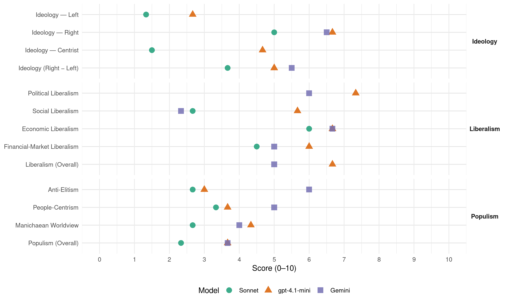

SGP (Netherlands, 2017)
manifesto_id 22952_201703
Get full text: This site shows derived annotations and short verbatim quotes only. The full manifesto text is © Manifesto Project / WZB — obtain it via manifesto-project.wzb.eu using the manifesto_id above.
Headline scores
| Dimension | Sonnet | gpt-4.1-mini | Gemini |
|---|---|---|---|
| Populism (Overall) | 2.3 | 3.7 | 3.7 |
| Anti-Elitism | 2.7 | 3.0 | 6.0 |
| People-Centrism | 3.3 | 3.7 | 5.0 |
| Manichaean Worldview | 2.7 | 4.3 | 4.0 |
| Ideology (Right − Left) | 3.7 | 5.0 | 5.5 |
| Liberalism (Overall) | – | 6.7 | 5.0 |
| Political Liberalism | – | 7.3 | 6.0 |
| Social Liberalism | 2.7 | 5.7 | 2.3 |
| Economic Liberalism | 6.0 | 6.7 | 6.7 |
| Financial-Market Liberalism | 4.5 | 6.0 | 5.0 |
Evidence per dimension
Economic Liberalism
Gemini · score 7.0 · verified · chunk 1
“Te veel regels en bemoeienis en een hoge belastingdruk”
geld in het laatje brengen. Te veel regels en bemoeienis en een hoge belastingdruk werken daarbij niet
Gemini · score 6.0 · verified · chunk 2
“Ondernemers vormen de motor van onze economie”
Werkgevers en werknemers zijn van elkaar afhankelijk. Ondernemers vormen de motor van onze economie. Zij zijn vaak –ook letterlijk- de werkgevers. Ondernemingen kunnen echter enkel bloeien door de inzet van werknemers.
Gemini · score 7.0 · verified · chunk 3
“lasten voor ondernemers omlaag”
economische groei te stimuleren moeten de lasten voor ondernemers omlaag. Lagere lasten worden idealiter bereikt door
gpt-4.1-mini · score 6.0 · verified · chunk 1
“Zonder ondernemende mensen die risico’s durven nemen en de handen uit de mouwen steken, kan een samenleving niet floreren”
Zonder ondernemende mensen die risico’s durven nemen en de handen uit de mouwen steken, kan een samenleving niet floreren. Om die reden spant de SGP zich in voor mensen die door hard te werken in hun eigen bedrijf of onderneming, geld in het laatje brengen. Te veel regels en bemoeienis en een hoge belastingdruk werken daarbij niet, net zomin als zwalkende politici die vandaag dít en morgen weer dát dicteren.
gpt-4.1-mini · score 7.0 · verified · chunk 2
“Ondernemers zijn de trekpaarden van onze economie. En dan gaat het niet eerst en alleen over grote concerns, maar nog veel meer en vooral over mensen in het midden- en kleinbedrijf.”
Ondernemers zijn de trekpaarden van onze economie. En dan gaat het niet eerst en alleen over grote concerns, maar nog veel meer en vooral over mensen in het midden- en kleinbedrijf, waaronder familiebedrijven die al generaties lang bestaan.
gpt-4.1-mini · score 7.0 · verified · chunk 3
“de lasten op arbeid omlaag”
Om de werkgelegenheid en de economische groei te stimuleren moeten de lasten voor ondernemers omlaag.
Sonnet · score 5.0 · mixed · chunk 1
“Te veel regels en bemoeienis en een hoge belastingdruk”
Te veel regels en bemoeienis en een hoge belastingdruk werken daarbij niet, net zomin als zwalkende politici die vandaag dít en morgen weer dát dicteren.
Sonnet · score 6.0 · verified · chunk 2
“minder regeltjes en de regels die wel nodig zijn”
Den Haag en Brussel zouden dat best wel eens meer mogen waarderen! Bijvoorbeeld door minder regeltjes en de regels die wel nodig zijn af te stemmen op de praktijk.
Sonnet · score 5.0 · mixed · chunk 3
“lasten op arbeid worden verlaagd”
De lasten op arbeid worden verlaagd door het introduceren van één laag, uniform basistarief en een toptarief: de zogenoemde sociale vlaktaks.
Financial-Market Liberalism
Gemini · score 4.0 · verified · chunk 2
“nieuwe vormen van kredietverstrekking voor bedrijven”
De nuttige en nodige regeling Veiligheid Kleine Bedrijven moet blijven. Nieuwe vormen van kredietverstrekking voor bedrijven, zoals kredietunies en crowdfunding, verdienen steun.
Gemini · score 6.0 · verified · chunk 3
“De belasting op vreemd en eigen vermogen moet meer gelijk worden getrokken”
vennootschapsbelasting kan dan vervolgens budgettair neutraal verlaagd worden. De belasting op vreemd en eigen vermogen moet meer gelijk worden getrokken. Ondernemers in (tijdelijke) moeilijkheden moeten
gpt-4.1-mini · score 6.0 · verified · chunk 3
“Nederland dient zich in te spannen voor een brede, internationale aanpak van deze misstanden”
Ondernemers die via allerlei fiscale constructies de opbrengst en winst zodanig verschuiven dat er uiteindelijk geen belasting meer hoeft te worden betaald, moeten worden tegengehouden. Een nationale aanpak van dit soort praktijken werkt slecht. Daarom dient Nederland zich in te spannen voor een brede, internationale aanpak van deze misstanden, zoals via de EU en de OESO.
Sonnet · score 5.0 · verified · chunk 2
“Nieuwe vormen van kredietverstrekking voor bedrijven, zoals kredietunies en crowdfunding”
Nieuwe vormen van kredietverstrekking voor bedrijven, zoals kredietunies en crowdfunding, verdienen steun. Het Rijk moet ook oog hebben voor regionale bedrijvigheid.
Sonnet · score 4.0 · verified · chunk 3
“De ECB mag geen misbruik van de huidige situatie maken”
De ECB mag geen misbruik van de huidige situatie maken door geld in de economie te pompen om die kunstmatig aan te jagen. Europese banken en overheden moeten hun financiën saneren.
Political Liberalism
Gemini · score 7.0 · verified · chunk 1
“Nederland is een van de meest stabiele democratieën”
bewezen. Nederland is een van de meest stabiele democratieën in de hele wereld.
Gemini · score 4.0 · verified · chunk 2
“ondermijnt dat het vertrouwen in de rechtsstaat”
Straffen moeten in verhouding staan tot wat de daders hebben gedaan en aangericht. Gebeurt dat niet, dan ondermijnt dat het vertrouwen in de rechtsstaat. Het gaat om de belangrijkste taak van de overheid: het spreken van recht en handhaven van de orde.
Gemini · score 7.0 · verified · chunk 3
“democratische controle op Europese politiek moet primair in de nationale parlementen gebeuren”
werkwijze de vorm van een raadgevend assemblee krijgen en de democratische controle op Europese politiek moet primair in de nationale parlementen gebeuren. Zolang bovenstaande nieuwe rol van het
gpt-4.1-mini · score 8.0 · verified · chunk 1
“Nederland is een van de meest stabiele democratieën in de hele wereld”
Nederland is een van de meest stabiele democratieën in de hele wereld. In een democratische rechtsstaat als de onze bepalen de regering en het parlement in overleg hoe binnen de Grondwettelijke kaders de onderlinge constitutionele verhoudingen zijn. Tweede Kamer en Eerste Kamer hebben daarom een waakhondfunctie om de vrijheden van de burgers te waarborgen en inbreuken op de Nederlandse soevereiniteit te voorkomen.
gpt-4.1-mini · score 7.0 · verified · chunk 2
“De overheid dient die fundamentele vrijheid te eerbiedigen. Dat neemt niet weg dat de overheid er wel op toe dient te zien dat het onderwijs deugdelijk is.”
De overheid dient die fundamentele vrijheid te eerbiedigen. Dat neemt niet weg dat de overheid er wel op toe dient te zien dat het onderwijs deugdelijk is. De kwaliteit moet voldoende zijn.
gpt-4.1-mini · score 7.0 · verified · chunk 3
“de democratische controle op Europese politiek moet primair in de nationale parlementen gebeuren”
Het Europees Parlement moet wat betreft verantwoordelijkheden en werkwijze de vorm van een raadgevend assemblee krijgen en de democratische controle op Europese politiek moet primair in de nationale parlementen gebeuren.
Sonnet · score 6.0 · mixed · chunk 1
“Nederland is een van de meest stabiele democratieën”
Nederland is een van de meest stabiele democratieën in de hele wereld. In een democratische rechtsstaat als de onze bepalen de regering en het parlement in overleg hoe binnen de Grondwettelijke kaders de onderlinge constitutionele verhoudingen zijn.
Sonnet · score 6.0 · mixed · chunk 2
“privacy de noodzakelijke veiligheidsmaatregelen niet doorkruisen”
Bij het vinden van de juiste balans tussen veiligheid voor iedereen en ieders individuele vrijheid en privacy, mag de privacy de noodzakelijke veiligheidsmaatregelen niet doorkruisen.
Sonnet · score 5.0 · mixed · chunk 3
“nationale parlementen moeten ongewenste voorstellen voor EU-regelgeving eenvoudiger kunnen blokkeren”
Nationale parlementen moeten ongewenste voorstellen voor EU-regelgeving eenvoudiger kunnen blokkeren. Het Europees Parlement vergadert voortaan alleen nog in Brussel.
Liberalism (Overall)
Gemini · score 5.0 · verified · chunk 1
“Te veel regels en bemoeienis en een hoge belastingdruk”
geld in het laatje brengen. Te veel regels en bemoeienis en een hoge belastingdruk werken daarbij niet
Gemini · score 4.0 · verified · chunk 2
“Ondernemers vormen de motor van onze economie”
Werkgevers en werknemers zijn van elkaar afhankelijk. Ondernemers vormen de motor van onze economie. Zij zijn vaak –ook letterlijk- de werkgevers. Ondernemingen kunnen echter enkel bloeien door de inzet van werknemers.
Gemini · score 6.0 · verified · chunk 3
“lasten voor ondernemers omlaag”
economische groei te stimuleren moeten de lasten voor ondernemers omlaag. Lagere lasten worden idealiter bereikt door
gpt-4.1-mini · score 7.0 · verified · chunk 1
“Nederland is een van de meest stabiele democratieën in de hele wereld”
Nederland is een van de meest stabiele democratieën in de hele wereld. In een democratische rechtsstaat als de onze bepalen de regering en het parlement in overleg hoe binnen de Grondwettelijke kaders de onderlinge constitutionele verhoudingen zijn. Tweede Kamer en Eerste Kamer hebben daarom een waakhondfunctie om de vrijheden van de burgers te waarborgen en inbreuken op de Nederlandse soevereiniteit te voorkomen.
gpt-4.1-mini · score 7.0 · verified · chunk 2
“Ondernemers zijn de trekpaarden van onze economie. En dan gaat het niet eerst en alleen over grote concerns, maar nog veel meer en vooral over mensen in het midden- en kleinbedrijf.”
Ondernemers zijn de trekpaarden van onze economie. En dan gaat het niet eerst en alleen over grote concerns, maar nog veel meer en vooral over mensen in het midden- en kleinbedrijf, waaronder familiebedrijven die al generaties lang bestaan.
gpt-4.1-mini · score 6.0 · verified · chunk 3
“de democratische controle op Europese politiek moet primair in de nationale parlementen gebeuren”
Het Europees Parlement moet wat betreft verantwoordelijkheden en werkwijze de vorm van een raadgevend assemblee krijgen en de democratische controle op Europese politiek moet primair in de nationale parlementen gebeuren.
Sonnet · score 4.0 · mixed · chunk 1
“exclusieve status van het huwelijk van man en vrouw”
De exclusieve status van het huwelijk van man en vrouw dient in regelgeving en beleid tot uitdrukking te komen.
Sonnet · score 5.0 · mixed · chunk 2
“minder regeltjes en de regels die wel nodig zijn”
Den Haag en Brussel zouden dat best wel eens meer mogen waarderen! Bijvoorbeeld door minder regeltjes en de regels die wel nodig zijn af te stemmen op de praktijk.
Sonnet · score 4.0 · mixed · chunk 3
“Door de Europese richtlijn gelijke behandeling gaat een dikke streep”
Door de Europese richtlijn gelijke behandeling gaat een dikke streep omdat deze afgedwongen gelijkheid de vrijheid te veel verdringt.
Anti-Elitism
Gemini · score 6.0 · verified · chunk 1
“overheid-van-tegenwoordig houdt zich angstvallig doof”
Maar de overheid-van-tegenwoordig houdt zich angstvallig doof als we een beroep doen
Gemini · score 5.0 · verified · chunk 2
“Terwijl beleggers met enorme bonussen gingen strijken”
en onduidelijke en bedrieglijke constructies, het kon niet op. Inmiddels weten we beter. De pensioenpotten waren helemaal niet zo vol als nodig is. Harde garanties bleken boterzacht. Door de kredietcrisis, een lagere rentestand en vergrijzing waren pensioenfondsen zelfs genoodzaakt om te gaan korten op de uitkeringen. Terwijl beleggers met enorme bonussen gingen strijken. Dat heeft, heel begrijpelijk, het vertrouwen bij veel mensen geschaad.
Gemini · score 7.0 · verified · chunk 3
“Alleen de Europese elite lijkt niet in de gaten te hebben”
het ‘project Europa’ er sinds de oprichting van de Europese Economische Gemeenschap (EEG) nog niet zo slecht voor heeft gestaan. Alleen de Europese elite lijkt niet in de gaten te hebben dat het maatschappelijk draagvlak
gpt-4.1-mini · score 3.0 · verified · chunk 1
“De overheid-van-tegenwoordig houdt zich angstvallig doof”
Ook geeft ze niet thuis als gevraagd wordt om de oneerlijk verdeelde belastingdruk op huishoudens te corrigeren. Dat motiveert de SGP alleen maar om te blijven hameren op een eerlijke behandeling van eenverdienersgezinnen en de waarde van trouw. Als wij dat niet doen, wie dan nog wel? Veilig leven Kerntaak van een overheid is om ‘haar’ burgers te beschermen.
gpt-4.1-mini · score 3.0 · verified · chunk 2
“De overheid mag, sterker nog, móet oog hebben voor het onderscheid dat er is tussen godsdiensten.”
De overheid mag, sterker nog, móet oog hebben voor het onderscheid dat er is tussen godsdiensten. Blind en onhistorisch gelijkheidsdenken doet geen recht aan de werkelijkheid.
gpt-4.1-mini · score 3.0 · verified · chunk 3
“de Europese elite lijkt niet in de gaten te hebben”
De bijna dogmatische ideologie dat de EU één dient te worden en haar invloedssfeer en macht steeds verder uit moet breiden, is bij veel Europese burgers en ondernemers op haar retour. Alleen de Europese elite lijkt niet in de gaten te hebben dat het maatschappelijk draagvlak voor het ‘project Europa’ er sinds de oprichting van de Europese Economische Gemeenschap (EEG) nog niet zo slecht voor heeft gestaan.
Sonnet · score 2.0 · verified · chunk 1
“de overheid-van-tegenwoordig houdt zich angstvallig doof”
Maar de overheid-van-tegenwoordig houdt zich angstvallig doof als we een beroep doen op het investeren in relaties. Alsof trouw een vies woord is!
Sonnet · score 2.0 · verified · chunk 2
“Den Haag en Brussel zouden dat best wel eens meer mogen waarderen”
Ondernemers zijn de trekpaarden van onze economie. Den Haag en Brussel zouden dat best wel eens meer mogen waarderen! Bijvoorbeeld door minder regeltjes
Sonnet · score 4.0 · verified · chunk 3
“Alleen de Europese elite lijkt niet in de gaten te hebben”
het maatschappelijk draagvlak voor het ‘project Europa’ er nog niet zo slecht voor heeft gestaan. Alleen de Europese elite lijkt niet in de gaten te hebben dat het maatschappelijk draagvlak
Ideology — Centrist
gpt-4.1-mini · score 4.0 · verified · chunk 1
“Iedere Nederlandse burger mag dan zijn stem laten horen”
Op Deo volente 15 maart zijn de verkiezingen voor de Tweede Kamer. Iedere Nederlandse burger mag dan zijn stem laten horen. Stem SGP! BESCHERMWAARDIG LEVEN 1. Voor het leven Een van de belangrijkste taken van de overheid is het beschermen van het leven.
gpt-4.1-mini · score 5.0 · verified · chunk 2
“De overheid mag, sterker nog, móet oog hebben voor het onderscheid dat er is tussen godsdiensten.”
De overheid mag, sterker nog, móet oog hebben voor het onderscheid dat er is tussen godsdiensten. Blind en onhistorisch gelijkheidsdenken doet geen recht aan de werkelijkheid.
gpt-4.1-mini · score 5.0 · verified · chunk 3
“de macht moet meer komen te liggen bij nationale parlementen”
De EU van de toekomst moet er radicaal anders uitzien dan de EU die we tot nu toe hadden. We mogen niet vergeten dat de samenwerking tussen Europese staten een steentje bijdroeg en bijdraagt aan de vrede, veiligheid en welvaart in Europa. Maar de EU moet veel eenvoudiger en flexibeler. De macht moet meer komen te liggen bij nationale parlementen.
Sonnet · score 1.0 · verified · chunk 1
“Stem SGP”
Iedere Nederlandse burger mag dan zijn stem laten horen. Stem SGP!
Sonnet · score 2.0 · verified · chunk 3
“De macht moet meer komen te liggen bij nationale parlementen”
Meer vrijheid, minder uniformiteit. De macht moet meer komen te liggen bij nationale parlementen. Op terreinen als de interne markt zijn harde basisafspraken nodig.
Ideology — Left
gpt-4.1-mini · score 3.0 · verified · chunk 1
“De overheid-van-tegenwoordig houdt zich angstvallig doof”
Ook geeft ze niet thuis als gevraagd wordt om de oneerlijk verdeelde belastingdruk op huishoudens te corrigeren. Dat motiveert de SGP alleen maar om te blijven hameren op een eerlijke behandeling van eenverdienersgezinnen en de waarde van trouw. Als wij dat niet doen, wie dan nog wel? Veilig leven Kerntaak van een overheid is om ‘haar’ burgers te beschermen.
gpt-4.1-mini · score 2.0 · verified · chunk 2
“De overheid moet niet bezuinigen op ontwikkelingssamenwerking, maar wel investeren in meer private betrokkenheid van burgers, bedrijven en organisaties.”
De overheid moet niet bezuinigen op ontwikkelingssamenwerking, maar wel investeren in meer private betrokkenheid van burgers, bedrijven en organisaties. Dit kan o. a. via fiscale maatregelen.
gpt-4.1-mini · score 3.0 · verified · chunk 3
“de lasten op arbeid omlaag”
Om de werkgelegenheid te stimuleren moeten de lasten op arbeid omlaag.
Sonnet · score 1.0 · verified · chunk 1
“eerlijke behandeling van eenverdienersgezinnen”
om te blijven hameren op een eerlijke behandeling van eenverdienersgezinnen en de waarde van trouw.
Sonnet · score 1.0 · verified · chunk 2
“Nederland werkt internationaal samen voor een betere belastingheffing”
Nederland werkt internationaal samen voor een betere belastingheffing in ontwikkelingslanden en het bestrijden van belastingontwijking door multinationals.
Sonnet · score 2.0 · verified · chunk 3
“De marktmacht van inkopers moet ingeperkt worden”
Het (Europese) mededingingsbeleid dient versoepeld te worden. De marktmacht van inkopers moet ingeperkt worden, zodat een groter deel van de marktprijs terecht komt bij de producenten.
Ideology (Right − Left)
Gemini · score 5.0 · verified · chunk 1
“massale immigratie van mensen die met name vanuit hun islamitische geloof”
afgelopen jaren mee geconfronteerd werden is de massale immigratie van mensen die met name vanuit hun islamitische geloof en cultuur, vreemd
Gemini · score 6.0 · verified · chunk 3
“Turkije hoort cultureel, economisch, godsdienstig noch politiek bij Europa”
en niet uitbreiden met nieuwe lidstaten. Turkije hoort cultureel, economisch, godsdienstig noch politiek bij Europa. Alleen al daarom kan van toetreding
gpt-4.1-mini · score 5.0 · verified · chunk 1
“De overheid-van-tegenwoordig houdt zich angstvallig doof”
Ook geeft ze niet thuis als gevraagd wordt om de oneerlijk verdeelde belastingdruk op huishoudens te corrigeren. Dat motiveert de SGP alleen maar om te blijven hameren op een eerlijke behandeling van eenverdienersgezinnen en de waarde van trouw. Als wij dat niet doen, wie dan nog wel? Veilig leven Kerntaak van een overheid is om ‘haar’ burgers te beschermen.
gpt-4.1-mini · score 5.0 · verified · chunk 2
“Barbaarse (zelfmoord)aanslagen op totaal onschuldige burgers laten zien dat we overal uiterst kwetsbaar zijn.”
Barbaarse (zelfmoord)aanslagen op totaal onschuldige burgers laten zien dat we overal uiterst kwetsbaar zijn. Iedereen loopt gevaar! Geradicaliseerde jihadstrijders blijken eenvoudig weer naar Europa terug te kunnen keren.
gpt-4.1-mini · score 5.0 · verified · chunk 3
“de Europese elite lijkt niet in de gaten te hebben”
De bijna dogmatische ideologie dat de EU één dient te worden en haar invloedssfeer en macht steeds verder uit moet breiden, is bij veel Europese burgers en ondernemers op haar retour. Alleen de Europese elite lijkt niet in de gaten te hebben dat het maatschappelijk draagvlak voor het ‘project Europa’ er sinds de oprichting van de Europese Economische Gemeenschap (EEG) nog niet zo slecht voor heeft gestaan.
Sonnet · score 3.0 · verified · chunk 1
“massale immigratie van mensen die…islamitische geloof en cultuur”
Een fenomeen waar we de afgelopen jaren mee geconfronteerd werden is de massale immigratie van mensen die met name vanuit hun islamitische geloof en cultuur, vreemd, zo niet vijandig staan tegenover de Nederlandse rechtsstaat.
Sonnet · score 4.0 · verified · chunk 2
“nieuwkomers die zich nú melden vaak afkomstig zijn uit islamitische landen”
Daar komt bij dat nieuwkomers die zich nú melden vaak afkomstig zijn uit islamitische landen en culturen die niet zelden haaks, soms zelfs vijandig staan tegenover onze (christelijke) waarden en levensstijl.
Sonnet · score 4.0 · verified · chunk 3
“Turkije hoort cultureel, economisch, godsdienstig noch politiek bij Europa”
Turkije hoort cultureel, economisch, godsdienstig noch politiek bij Europa. Alleen al daarom kan van toetreding van dat land tot de EU geen sprake zijn.
Ideology — Right
Gemini · score 7.0 · verified · chunk 1
“massale immigratie van mensen die met name vanuit hun islamitische geloof”
afgelopen jaren mee geconfronteerd werden is de massale immigratie van mensen die met name vanuit hun islamitische geloof en cultuur, vreemd
Gemini · score 6.0 · verified · chunk 3
“Turkije hoort cultureel, economisch, godsdienstig noch politiek bij Europa”
en niet uitbreiden met nieuwe lidstaten. Turkije hoort cultureel, economisch, godsdienstig noch politiek bij Europa. Alleen al daarom kan van toetreding
gpt-4.1-mini · score 7.0 · verified · chunk 1
“massale immigratie van mensen die met name vanuit hun islamitische geloof”
Een fenomeen waar we de afgelopen jaren mee geconfronteerd werden is de massale immigratie van mensen die met name vanuit hun islamitische geloof en cultuur, vreemd, zo niet vijandig staan tegenover de Nederlandse rechtsstaat. Dat botst, vooral als dat zich uit in gedragingen die haaks staan op onze cultuur en wetten, zoals geweld, oproepen daartoe en antisemitisme.
gpt-4.1-mini · score 7.0 · verified · chunk 2
“Migranten die naar Nederland willen komen om andere reden dan asiel moeten aan kunnen tonen dat zij in ons land op eigen benen kunnen staan.”
Migranten die naar Nederland willen komen om andere reden dan asiel moeten aan kunnen tonen dat zij in ons land op eigen benen kunnen staan. Kansloze (gezins)migratie moet voorkomen worden.
gpt-4.1-mini · score 6.0 · verified · chunk 3
“Turkije hoort cultureel, economisch, godsdienstig noch politiek bij Europa”
De EU moet inzetten op een radicale hervorming en niet uitbreiden met nieuwe lidstaten. Turkije hoort cultureel, economisch, godsdienstig noch politiek bij Europa. Alleen al daarom kan van toetreding van dat land tot de EU geen sprake zijn.
Sonnet · score 5.0 · verified · chunk 1
“massale immigratie van mensen die…islamitische geloof en cultuur”
Een fenomeen waar we de afgelopen jaren mee geconfronteerd werden is de massale immigratie van mensen die met name vanuit hun islamitische geloof en cultuur, vreemd, zo niet vijandig staan tegenover de Nederlandse rechtsstaat.
Sonnet · score 5.0 · verified · chunk 2
“nieuwkomers die zich nú melden vaak afkomstig zijn uit islamitische landen”
Daar komt bij dat nieuwkomers die zich nú melden vaak afkomstig zijn uit islamitische landen en culturen die niet zelden haaks, soms zelfs vijandig staan tegenover onze (christelijke) waarden en levensstijl.
Sonnet · score 5.0 · verified · chunk 3
“Turkije hoort cultureel, economisch, godsdienstig noch politiek bij Europa”
Turkije hoort cultureel, economisch, godsdienstig noch politiek bij Europa. Alleen al daarom kan van toetreding van dat land tot de EU geen sprake zijn.
Manichaean Worldview
Gemini · score 4.0 · verified · chunk 3
“spreken zij met dubbele tong”
Toch blijven veel Europese regeringen besluiten nemen die zorgen voor een verdere uitbouw en verdieping van de EU. Vaak spreken zij met dubbele tong: EU-kritisch in hun nationale parlementen
gpt-4.1-mini · score 6.0 · verified · chunk 1
“De breuk kan alleen geheeld worden door het geloof in Christus”
Die breuk is zicht- en voelbaar in de zonde. Die breuk kan alleen geheeld worden door het geloof in Christus, waardoor verzoening met God en met de medemensen tot stand wordt gebracht. De kern van het goede leven is dan ook een bestaan tot eer van de Schepper en met een open oog en hart voor de andere schepselen.
gpt-4.1-mini · score 5.0 · verified · chunk 2
“Barbaarse (zelfmoord)aanslagen op totaal onschuldige burgers laten zien dat we overal uiterst kwetsbaar zijn.”
Barbaarse (zelfmoord)aanslagen op totaal onschuldige burgers laten zien dat we overal uiterst kwetsbaar zijn. Iedereen loopt gevaar! Geradicaliseerde jihadstrijders blijken eenvoudig weer naar Europa terug te kunnen keren.
gpt-4.1-mini · score 2.0 · verified · chunk 3
“de EU bestaat uit een groot aantal staten die veel gemeenschappelijk hebben, maar waartussen ook wezenlijke verschillen bestaan”
Als gevolg van onder meer de financiële en de vluchtelingencrisis dringt steeds meer het besef door dat de EU bestaat uit een groot aantal staten die veel gemeenschappelijk hebben, maar waartussen ook wezenlijke verschillen bestaan. Deze zijn vaak terug te voeren op een andere geografische ligging, geschiedenis, cultuur en economische ontwikkeling.
Sonnet · score 2.0 · verified · chunk 1
“het kwaad van het antisemitisme”
Helaas steekt in heel de wereld, ook in Europa, het kwaad van het antisemitisme de kop weer op.
Sonnet · score 3.0 · verified · chunk 2
“Barbaarse (zelfmoord)aanslagen op totaal onschuldige burgers”
Terrorisme De uiterst bloedige aanslagen in Parijs en Brussel laten zien dat de strijd tegen het islamitisch terrorisme niet alleen in Syrië en Irak gevoerd moet worden. Barbaarse (zelfmoord)aanslagen op totaal onschuldige burgers laten zien dat we overal uiterst kwetsbaar zijn.
Sonnet · score 3.0 · verified · chunk 3
“Den Haag en Brussel helpen niet mee”
Belastingen en iedere keer nieuwe, bureaucratische regels jagen de kostprijs op. Ook Den Haag en Brussel helpen niet mee. Dat werkt dus niet.
People-Centrism
Gemini · score 5.0 · verified · chunk 3
“bij veel Europese burgers en ondernemers”
en haar invloedssfeer en macht steeds verder uit moet breiden, is bij veel Europese burgers en ondernemers op haar retour. Alleen de Europese elite
gpt-4.1-mini · score 5.0 · verified · chunk 1
“Iedere Nederlandse burger mag dan zijn stem laten horen”
Op Deo volente 15 maart zijn de verkiezingen voor de Tweede Kamer. Iedere Nederlandse burger mag dan zijn stem laten horen. Stem SGP! BESCHERMWAARDIG LEVEN 1. Voor het leven Een van de belangrijkste taken van de overheid is het beschermen van het leven.
gpt-4.1-mini · score 4.0 · verified · chunk 2
“Van nieuwkomers mag verwacht worden dat ze zich zoveel mogelijk inspannen om een steentje bij te dragen aan onze samenleving.”
Van nieuwkomers mag verwacht worden dat ze zich zoveel mogelijk inspannen om een steentje bij te dragen aan onze samenleving. Daar hoort bijvoorbeeld bij dat ze financieel zoveel mogelijk op eigen benen staan.
gpt-4.1-mini · score 2.0 · verified · chunk 3
“de macht moet meer komen te liggen bij nationale parlementen”
De EU van de toekomst moet er radicaal anders uitzien dan de EU die we tot nu toe hadden. We mogen niet vergeten dat de samenwerking tussen Europese staten een steentje bijdroeg en bijdraagt aan de vrede, veiligheid en welvaart in Europa. Maar de EU moet veel eenvoudiger en flexibeler. De macht moet meer komen te liggen bij nationale parlementen.
Sonnet · score 3.0 · verified · chunk 1
“Stem voor het leven”
Stem voor het leven! Dat is het appèl dat de SGP op de kiezers doet. Stem voor het leven.
Sonnet · score 3.0 · verified · chunk 2
“Van nieuwkomers mag verwacht worden dat ze zich zoveel mogelijk inspannen”
Integratie en inburgering Van nieuwkomers mag verwacht worden dat ze zich zoveel mogelijk inspannen om een steentje bij te dragen aan onze samenleving.
Sonnet · score 4.0 · verified · chunk 3
“Consumenten en de grote supermarkten willen voor een dubbeltje”
De vele gezinsbedrijven in de landbouw en visserij hebben het zwaar de laatste tijd. Consumenten en de grote supermarkten willen voor een dubbeltje op de eerste rang zitten.
Populism (Overall)
Gemini · score 3.0 · verified · chunk 1
“overheid-van-tegenwoordig houdt zich angstvallig doof”
Maar de overheid-van-tegenwoordig houdt zich angstvallig doof als we een beroep doen
Gemini · score 3.0 · verified · chunk 2
“Terwijl beleggers met enorme bonussen gingen strijken”
en onduidelijke en bedrieglijke constructies, het kon niet op. Inmiddels weten we beter. De pensioenpotten waren helemaal niet zo vol als nodig is. Harde garanties bleken boterzacht. Door de kredietcrisis, een lagere rentestand en vergrijzing waren pensioenfondsen zelfs genoodzaakt om te gaan korten op de uitkeringen. Terwijl beleggers met enorme bonussen gingen strijken. Dat heeft, heel begrijpelijk, het vertrouwen bij veel mensen geschaad.
Gemini · score 5.0 · verified · chunk 3
“Alleen de Europese elite lijkt niet in de gaten te hebben”
het ‘project Europa’ er sinds de oprichting van de Europese Economische Gemeenschap (EEG) nog niet zo slecht voor heeft gestaan. Alleen de Europese elite lijkt niet in de gaten te hebben dat het maatschappelijk draagvlak
gpt-4.1-mini · score 5.0 · verified · chunk 1
“De overheid-van-tegenwoordig houdt zich angstvallig doof”
Ook geeft ze niet thuis als gevraagd wordt om de oneerlijk verdeelde belastingdruk op huishoudens te corrigeren. Dat motiveert de SGP alleen maar om te blijven hameren op een eerlijke behandeling van eenverdienersgezinnen en de waarde van trouw. Als wij dat niet doen, wie dan nog wel? Veilig leven Kerntaak van een overheid is om ‘haar’ burgers te beschermen.
gpt-4.1-mini · score 4.0 · verified · chunk 2
“Barbaarse (zelfmoord)aanslagen op totaal onschuldige burgers laten zien dat we overal uiterst kwetsbaar zijn.”
Barbaarse (zelfmoord)aanslagen op totaal onschuldige burgers laten zien dat we overal uiterst kwetsbaar zijn. Iedereen loopt gevaar! Geradicaliseerde jihadstrijders blijken eenvoudig weer naar Europa terug te kunnen keren.
gpt-4.1-mini · score 2.0 · verified · chunk 3
“de Europese elite lijkt niet in de gaten te hebben”
De bijna dogmatische ideologie dat de EU één dient te worden en haar invloedssfeer en macht steeds verder uit moet breiden, is bij veel Europese burgers en ondernemers op haar retour. Alleen de Europese elite lijkt niet in de gaten te hebben dat het maatschappelijk draagvlak voor het ‘project Europa’ er sinds de oprichting van de Europese Economische Gemeenschap (EEG) nog niet zo slecht voor heeft gestaan.
Sonnet · score 2.0 · verified · chunk 1
“de overheid-van-tegenwoordig houdt zich angstvallig doof”
Maar de overheid-van-tegenwoordig houdt zich angstvallig doof als we een beroep doen op het investeren in relaties.
Sonnet · score 2.0 · verified · chunk 2
“Den Haag en Brussel zouden dat best wel eens meer mogen waarderen”
Ondernemers zijn de trekpaarden van onze economie. Den Haag en Brussel zouden dat best wel eens meer mogen waarderen! Bijvoorbeeld door minder regeltjes
Sonnet · score 3.0 · verified · chunk 3
“Alleen de Europese elite lijkt niet in de gaten te hebben”
het maatschappelijk draagvlak voor het ‘project Europa’ er nog niet zo slecht voor heeft gestaan. Alleen de Europese elite lijkt niet in de gaten te hebben dat het maatschappelijk draagvlak
Social Liberalism